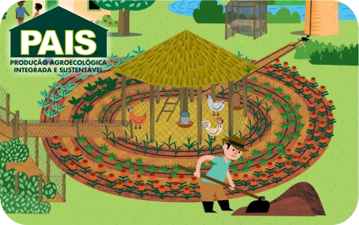

PROJETOS

PAIS
Pais – Produção Agroecológica Integrada e Sustentável: Agroecológica, pois trata-se de um sistema de produção baseado na preservação e respeito ao solo, ao meio ambiente e ao homem, em condições trabalhistas, econômicas e sociais justas; Integrada, por aliar a criação de animais com a produção vegetal e ainda utilizar insumos da propriedade em todo o processo produtivo; e Sustentável, porque preserva a qualidade do solo e das fontes de água, incentiva o associativismo dos produtores e aponta novos canais de boas colheitas agora e no futuro. Leia mais
ORGÂNICOS
Oferecer serviços de excelente qualidade, sempre buscando a originalidade, a eficiência, o sustentável, o ecológico, promovendo uma relação de confiança e amizade com seus clientes, trazendo sempre transparência nos seus serviços.
Nosso diferencial está nas técnicas que utilizamos para a realização dos plantios, sempre seguindo os princípios agroecológicos vivenciados ao longo dos anos. Não utilizamos nenhum tipo de agrotóxico, os quais chamamos de veneno, e os recursos locais são sempre priorizados. Nosso objetivo final é a produção de alimentos, independente do espaço e local de interesse.
IRRIGAÇÃO
A água é fator preponderante quando pensamos na beleza e na manutenção de um jardim. Toda espécie vegetal possui uma necessidade hídrica específica para o seu bom comportamento, crescimento e florescimento. É desta maneira que trabalhamos, projetando sistemas de irrigação personalizados e levando em consideração as espécies encontradas em cada local. Com os sistemas de irrigação automáticos, diminuímos mão-de-obra, valorizamos as propriedades, aumentamos a beleza de um paisagismo, aceleramos o crescimento das plantas, além de utilizarmos de maneira racional a água, disponibilizando-a sem exageros às plantas.